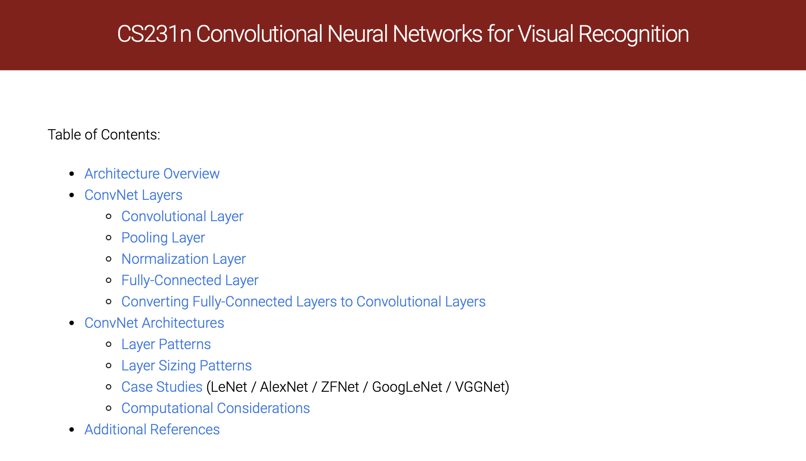
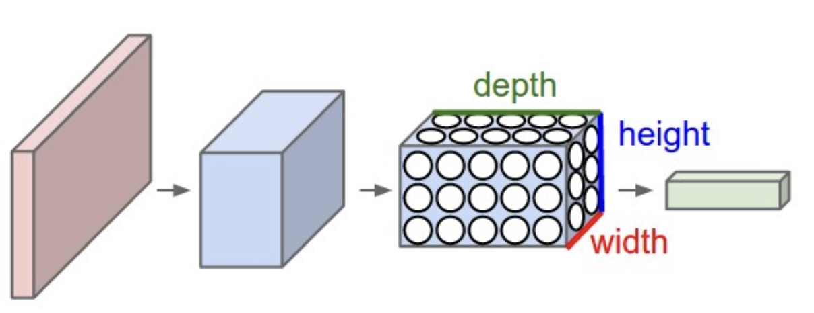
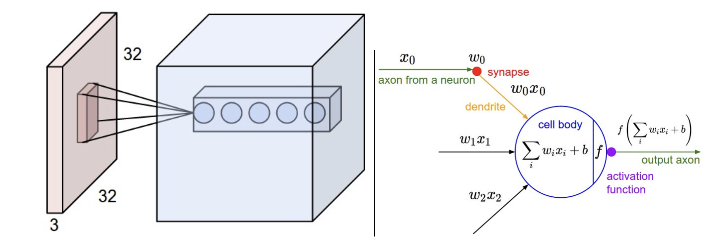
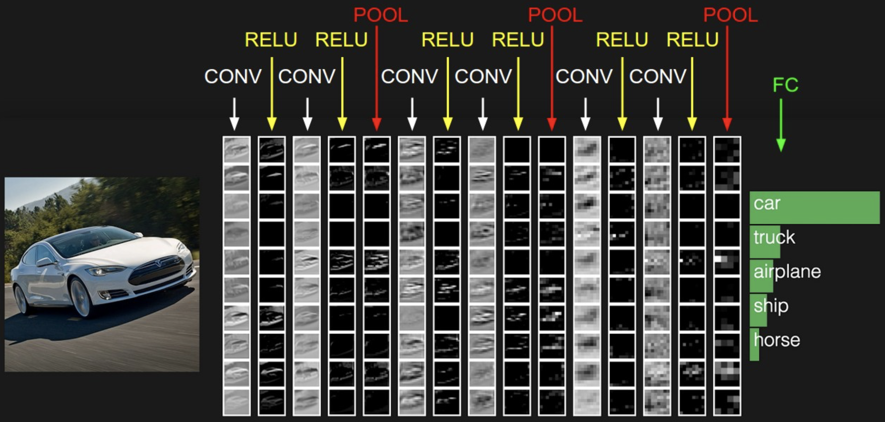

In this week’s blog, I will be summarizing the introductory “Convolutional Neural Networks” webpage from Fei-Fei Li’s Stanford CS 231n: “Deep Learning for Computer Vision” course. You can read the original page that I am summarizing here, and you can took a look at Fei-Fei’s full course page here. Note that the original webpage includes about twice as much content as what I have in this post, including a more thorough discussion of real-world examples of neural networks, additional schemas such as parameter sharing, and a few coding examples in numpy. My goal for this post is to offer a “CliffsNotes of a CliffsNotes,” presenting just the basic intuition behind CNNs without any further detail. If you want to learn more, I would highly suggest reading the original webpage that this post summarizes, or additional resources such as this 2015 arXiv review paper or this GeeksForGeeks walkthrough that includes some code examples. Without further ado, let’s get started!

Convolutional Neural Networks (also known as CNNs or ConvNets) are very similar to standard Neural Networks. They are also made up of neurons that have learnable weights and biases, with each neuron receiving an input, performing a dot product, and leading into an optional non-linearity. The overall network will also express a single differentiable score function, as well as include a loss function for the last fully-connected layer of the network.
So what is the main difference between CNNs and other NNs? CNNs make the explicit assumption that the inputs are images. This assumption allows us to encode certain properties into the architecture, as well as make the forward function more efficient to implement and reduce the number of parameters in the network.
Architecture Overview
All neural networks will receive an input (a single vector) and transform it through a series of hidden layers. Each hidden layer is made up of a set of neurons, where each neuron is fully connected to all neurons in the previous layer, and the neurons in a single layer function completely independently from one another (i.e. they share no connections with each other). The last fully-connected layer of the neural network is called the output layer - in classification settings, it represents the class scores.
When working with images, the full connectivity of a neural network makes it difficult to scale neurons for large inputs - for instance, with an image that is 32x32 pixels and has 3 color channels, each individual neuron would need to have 32*32*3 = 3072 weights. So how do we eliminate the wastefulness of fully connected neural networks?
CNNs constrain their architecture to match the dimensionality of images as input - in a CNN, neurons are arranged in three dimensions: width, height, and depth. Further, the neurons in a layer of a CNN will only be connected to a small region of the layer before them. Lastly, the final output layer will have dimensionality limited to 1x1xn, where n is the depth of the input layer, because the CNN architecture reduces the full input image into a single vector of class scores.

CNN Layers
Every layer of a CNN will transform one volume of activations to another through a differentiable function. There are three main types of layers used to build CNN architectures:
Convolutional Layer
Pooling Layer
Fully-Connected Layer
These layers are stacked together to form a full CNN architecture. CNNs will then transform the original image layer by layer from its original pixel values down to the final class scores.
A point to note is that some layers contain parameters, while others do not. For instance, the convolutional layers and the fully-connected layers perform transformations that are a function of not only the activations in the input volume, but also the parameters of the neurons. On the other hand, ReLU layers (applying an elementwise activation function such as thresholding at 0 with max[0,x]) or pooling layers will implement a fixed function. Parameters in the convolutional and fully connected layers will be trained via gradient descent to get the class scores predicted by the CNN to match with the labels in the training set of images.
Let’s now dive deeper into the individual CNN layers and their hyperpameters / connectivities
Convolutional (CONV) Layer
The convolutional layer (CONV) is the core building block of a CNN - these layers perform the most computational heavy lifting. The CONV layer’s parameters include a set of learnable filters - each filter will have a small width and height but will extend through the full depth of the input volume (e.g. 5x5x3 for an RGB picture). During the forward pass, we slide (a.k.a. convolve) each filter across the width and height of the input volume, computing dot products between the entries of the filter and the input at any position. As we slide the filter over the input volume, we produce a 2D activation map that gives the responses of that filter at every spatial position. We can think of the activation maps as masks that activate when they see a specific visual feature (e.g an edge or a blotch of color in the first layer; wheel or honeycomb shape in the last layer).

Local Connectivity
Convolutional layers also maintain local connectivity within the CNN - each neuron is connected only to a local region of the input volume. The spatial extent of this connectivity is a a hyperparameter known as the receptive field. While the connections exist locally along the width and height dimensions, they will extend along the full depth of the input volume.
Spatial Arrangement
Three different hyperparameters control how many neurons exist in the output volume and how they are arranged - these hyperparameters include depth, stride, and zero-padding.
- Depth: corresponds to the number of filters we would like to use. The more filters we include in our CNN, the more features we may be able to identify.
- Stride: corresponds to how we slide each filter in two-dimensional space. If the stride is 1, then we move the filters one pixel at a time. Changing the stride allows us to spatially manipulate the output volume of a layer.
- Zero-padding: corresponds to padding the input volume with 0’s around the border. Zero padding allows us to control the spatial size of the output volumes - most commonly, zero padding can be used to ensure that the input and output width and height are kept consistent.
Pooling Layer
Pooling layers can be found in between successive CONV layers in a CNN. The objective of each pooling layer is to reduce the spatial size of the representation, allowing us to control the number of parameters in the network, reduce required computation, and prevent overfitting to the training data. Each pooling layer operates independently on every depth slice of the input and resizes it spatially using the MAX operation (for instance, taking just the maximum value from a 2x2 square of values). Similar to the CONV layer, pooling occurs over the width and height dimensions, leaving the depth of the input unchanged. Note that it is not a requirement to include a pooling layer - many modern architectures have dropped pooling by sticking with CONV layers and manipulating the stride and depth hyperparameters instead.
Fully-connected (FC) Layer
Neurons in a FC layer have full connections to all activations in the previous layer, just like in neural networks.
CNN Architectures
The most common form of a CNN architecture will stack a few CONV-ReLu layers, follow them with a pooling layer, and then repeat this pattern until the image has been merged spatially to a smaller size. At some point, one might transition to fully-connected layers from CONV layers. The last FC layer will hold the output (e.g. the class scores).

If you’re feeling a bit of fatigue in thinking about NN architectures, then you will be relieved to know that in most cases, you really do not have to worry about how the structure of your network will affect the performance of your model. You really never have to train a CNN from scratch - just download a pretrained model (whatever works best on ImageNet) and finetune it on your data.
Summary
This concludes my overview of the introductory “Convolutional Neural Networks” chapter from Fei-Fei Li’s CS231n course. I look forward to summarizing more such chapters in the future and sharing more examples of code walkthroughs of these topics in the future. Until next time!